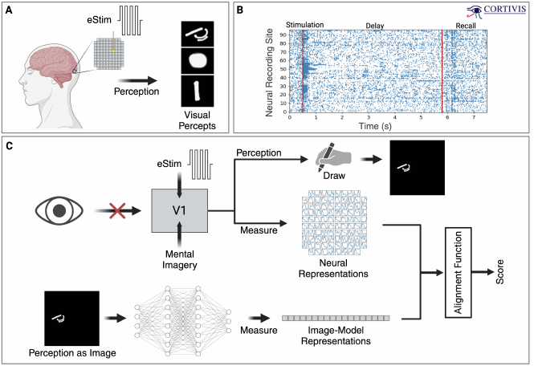
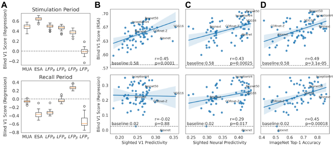
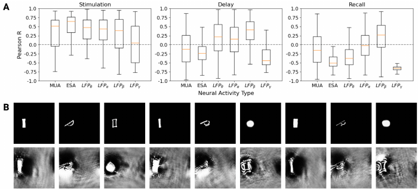
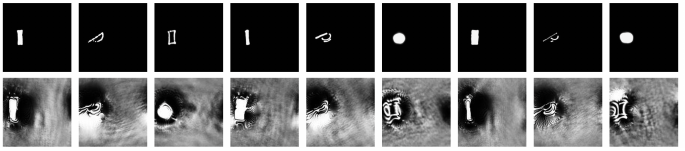

The paper asks a strange but important question
A person can be blind and still have living activity in the brain area that normally handles seeing. This paper asks whether that area still keeps some visual-style organization inside it.
The researchers cannot just show the person photos and record the response. So they use a visual brain implant to make tiny light-like experiences, then ask whether an image-recognition model sees those experiences in a way that matches the brain recordings.
The person saw tiny artificial light shapes
The implant did not restore normal sight. It produced small artificial light impressions called phosphenes. The participant remembered each little light shape, described it, and helped turn it into a drawing.
Those drawings became the bridge between brain and model. The brain side was electrical activity from visual cortex. The model side was what a trained image network did when it was shown the matching drawing.
The main result: the model and blind visual cortex lined up
The surprising part is that image models were not useless here. The better a model was at normal visual recognition, and the more it already resembled sighted visual brains, the better it tended to match activity in blind visual cortex.
The match was strongest right after the implant created the artificial light experience. The remembered-imagined part was weaker, but one slow brain-signal band still showed a real connection.
They also tried to guess what individual brain sites liked
After showing that one image model matched the recordings pretty well, the authors used it backward. They asked: what picture would make this model predict a strong response from a particular recorded brain site?
The answer produced fuzzy grayscale images. These were not perfect readouts of the person's experience, but they often shared visible features with the little light shapes that caused strong responses.
What this means, without overclaiming
This paper does not prove that blind visual cortex works just like sighted visual cortex. It also does not prove that an image model can read thoughts.
The careful claim is better: even without normal visual input, blind V1 may preserve enough visual-style structure that modern image models can partially line up with it. That could help future visual prostheses create more useful artificial sight.
The Question
Can a vision model help probe visual cortex when there is no natural vision?
The paper studies neural activity from an awake blind human participant implanted with a 96-channel intracortical prosthesis in right parafoveal V1. The central problem is methodological as much as scientific: the participant cannot be shown ordinary visual stimuli, but the implant can evoke phosphenes through electrical stimulation.
The authors ask whether deep neural network activations computed from drawings of those phosphenes align with recorded blind V1 activity. If they do, then image models may provide a bridge for studying and eventually interfacing with blind visual cortex.
Key Concepts
The vocabulary you need before the results
Click any card to expand it. These concepts carry most of the paper's logic.
Blind V1
Primary visual cortex in a blind participant.
Phosphene
An artificial visual percept evoked by stimulation.
Representational alignment
A score for whether two systems organize inputs similarly.
Local field potential
A slower population-level electrical signal.
Maximally exciting image
A model-generated guess about what a neuron site likes.
Interactive Widget
The experiment as a five-step alignment machine
Step through the pipeline. The left panel shows the object moving through the experiment; the right panel separates surface experience from hidden data representation.
1. Electrical stimulation creates a phosphene
The participant experiences a small light-like shape caused by intracortical electrical stimulation.
One of three selected electrodes is stimulated with a 167 ms cathodic-first biphasic pulse train.

Figure 1 evidence: the paper's own schematic shows the two tracks that must be compared: neural representations from blind V1 and image-model representations from the drawn percept.Method
What was measured and how it became comparable
Alignment calculation
The paper uses two comparison routes: representational similarity analysis and linear encoding. For linear encoding, DNN activations are projected with principal components, mapped to neural activity with ridge regression, and scored with Pearson correlation on held-out electrode data.
The baseline is important: the authors also compare against drawing-only alignment without DNN features, so the question is whether the model adds visual representational structure beyond the raw drawing.
| Feature | Plain meaning | Why it matters here |
|---|---|---|
| Spike count style signals | Fast "did cells fire?" measurements. | These directly track neural firing during stimulation. |
| Whole spike-envelope signal | A threshold-free estimate of spiking energy. | This was the strongest ResNet-50 stimulation-period match. |
| Slow population rhythms | Shared electrical rhythms from groups of neurons. | These matter for delay and recall because imagery may appear more in slower activity. |
| Drawing-only baseline | How far the phosphene image alone gets without model features. | DNNs only matter if they beat this baseline. |
Results
Across models, visual competence predicted blind V1 alignment
Figure 2 is the paper's main cross-model result. The top row is stimulation-evoked activity; the bottom row is recall. The upward trends mean that models more aligned with sighted brains or better at ImageNet also tended to align better with blind V1.

Figure 2 evidence: electrically evoked blind V1 alignment scores were significantly above drawing-only baseline for all feature sets except LFP gamma. Recall-period alignment was weaker, with LFP beta as the standout above-baseline feature.ResNet-50 Probe
What changed across stimulation, delay, and recall
The focused ResNet-50 analysis asks where the alignment lives in time and signal type.

Figure 3 evidence: during the first 200 ms of stimulation, all measured activity types except LFP gamma significantly correlated with ResNet-50 outputs; ESA was strongest on average. During post-stimulation delay, theta, alpha, and beta local field potentials remained significant. During recall, only beta local field potential was significant.Interpretability
Using the aligned model backward to ask what blind V1 sites prefer

Figure 3B crop: top row shows the participant's rendered phosphenes; bottom row shows model-predicted maximally exciting images for the most responsive neural sites.The authors fit a linear model from the first layer of ResNet-50 to blind V1 activity, then searched for grayscale images predicted to maximize a selected neural site's response. This is a proof of concept, not a finished decoder.
1. Phosphene
The artificial percept is drawn as a small grayscale shape on black.
2. Neural site
The paper picks a recording site that fired strongly for that phosphene.
3. MEI
The model searches for an image predicted to drive that site maximally.
Implications
What changes if this result holds up?
For visual prostheses
DNN-aligned models could help design stimulation patterns that better match the remaining visual representational structure in blind V1.
For blindness and plasticity
The result suggests blind V1 may preserve visual-style processing capacity while also being reorganized by blindness and non-visual use.
For model neuroscience
Brain-like image models may be useful beyond sighted animal datasets, extending representational alignment tools into human neuroprosthetic contexts.
Limits
What the paper does not settle
The analysis is exploratory and based on a single blind human participant with an intracortical prosthesis.
The dataset contains a limited number of neural responses and visual percepts, so broad claims about blind V1 tuning need more data.
DNN inputs are phosphene drawings refined with a sighted researcher. The method depends on how private percepts are translated into images.
The paper cannot fully separate preserved visual processing from cortical reorganization or from special mechanisms of electrical stimulation.
Quiz
Check your model of the paper
1. Why did the authors use phosphene drawings as DNN inputs?
2. Which period produced the clearest DNN-blind V1 alignment?
3. What is the safest interpretation of the MEI images?
comment/feedback
Leave review notes on the local page
This public GitHub Pages copy is read-only. The live feedback workflow runs in the local server version, where submitted batches are saved locally so Codex can process comments and update this page before the next publish.
Open the panel
Use the feedback launcher or the button below to open the floating review panel.
Attach a note
Highlight confusing wording, select a visual block, or leave a general comment.
Submit batch
The server appends your review to the local inbox for processing.
papers/2403.12990/feedback/inbox.jsonl